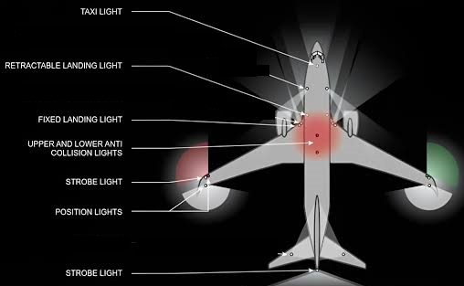
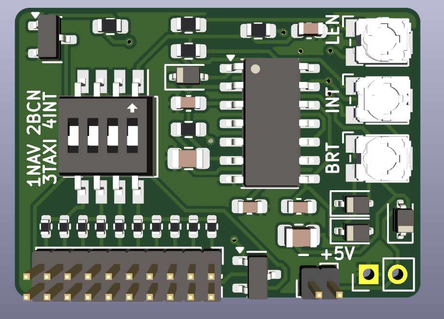
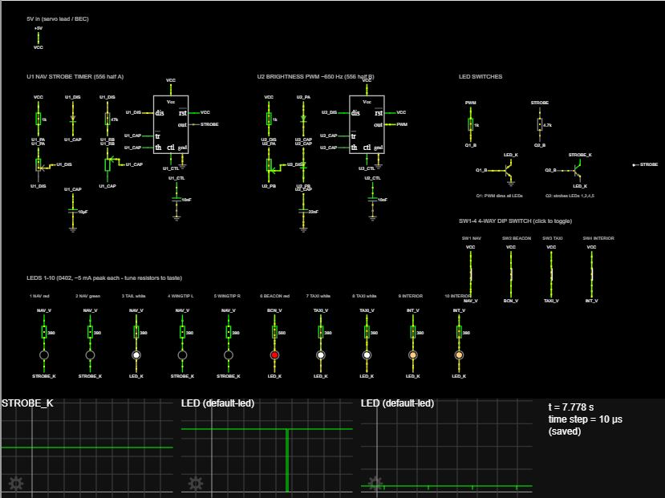

Project introduction
Real aircraft carry several light groups that behave differently such as navigation lights, wingtip strobes, a beacon, taxi lights and cabin lighting. Reproducing that in a plastic kit means driving ten 0402 LEDs (1.0 × 0.5 mm) from a board small enough to hide in a fuselage or display base. The lights driven by this board are designed according to this image.

Based on these requirements, the goal is to achieve functionality that allows switching of each light group independently, dimming of everything from one control, and adjustment of both how often the strobes fire and how long each flash lasts.

Major design choices
- Analog timer. A TLC556 needs no firmware and is adjusted with a screwdriver. The CMOS version draws far less current than the classic NE556 with the same pinout. This choice sacrifices programmable patterns such as double-flash strobes, however this is noted for future revisions.
- PWM dimming. One transistor switching every LED on and off dims the whole board from a single trimmer, and keeps LED colours consistent where a resistor-based dimmer would shift them.
- Trimmers and a DIP switch. Small surface-mount parts instead of panel pots and toggles keep the board at desirabley small. Settings are made once before the board is hidden in the model.
- A resistor and pin pair for every LED. Each LED gets its own current and can be replaced on its own, at the cost of 20 wires through the airframe.
- 5V power supply. A battery fitting inside the model remains unrealistic for a product that can be adaptable to a range of models. The board takes 5V from 3 x AAA or USB in the base.
Design
- Single timing chip: unit A of the timer is an astable oscillator with a steering diode, so flash length and time between flashes are set by separate trimmers instead of being tied together.
- Constant-frequency PWM: unit B’s duty cycle is set by one trimmer with steering diodes, keeping the frequency near 650 Hz across the whole brightness range.
- Stacked switches: strobe LEDs return through Q2 and then Q1, so they only light when a flash pulse and the PWM are both high. The brightness setting applies to the strobes too.
- High-side group switching: the DIP switch feeds each group’s supply rail, so turning a group off never disturbs the timing circuitry.
| Control | Lights | Behaviour |
|---|---|---|
| DIP 1 – NAV | LEDs 1–5 | Red/green nav and wingtips strobe, tail steady |
| DIP 2 – BCN | LED 6 | Beacon |
| DIP 3 – TAXI | LEDs 7, 8 | Steady |
| DIP 4 – INT | LEDs 9, 10 | Steady |
| RV1 – BRT | All | Brightness, 1–99 % |
| RV2 – INT | Strobes | Time between flashes, 0.3–3.8 s |
| RV3 – LEN | Strobes | Flash length, 10–200 ms |
Results
The board hasn't been built yet, results as of yet are purely from falstad simulations.
- Falstad simulation results: strobe timing and PWM dimming were demonstrated in Falstad
before PCB design, the PCB schematic replicates this working model.

- Clean board checks: KiCad DRC with 0 errors and 0 unconnected pads, and a pad-by-pad comparison of the PCB against the schematic with 0 mismatches.
- Board size: PCB design is two layers, 34 parts, with every surface-mount part on one side, resulting in a size of 28mm x 20mm.
- Power consumption With all LEDs on at full brightness the device is expected to consume 45 mA, roughly 20 hours on 3 x AAA.
Future developments
- Smaller components This initial revision is done as a cheap proof of concept, and can likely be made much smaller, while at a higher cost.
- Shared cathode returns. A 2 x 6 LED header reduces the wires through the fuselage from 20 to 12, however will mean a wire harness is required.
- On-board boost converter. Would allow a single LiPo cell inside a larger kit power the board. Only necessary if the battery must fit in the model rather than the base.
- Additional LEDs. A circuit to flicker and pulse orange or red LEDs would likely be effective at simulating jet engine visuals, or possibly even early piston engine exhuast, however this would require a larger board and more components.